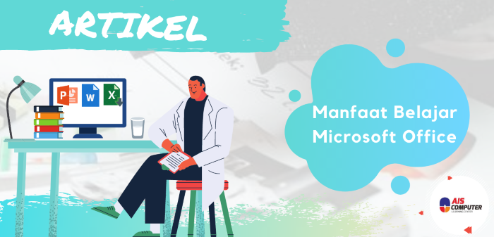

Manfaat Belajar Microsoft Office
Prayogi Notonegoro
Agustus 09, • 8 min read

Perkembangan teknologi yang terjadi saat ini telah banyak menunjukkan kemajuan yang sangat luar
biasa. Ada banyak hal dari sektor kehidupan yang telah memanfaatkan keberadaan teknologi. Salah
satu contoh perkembangan teknologi yang dapat memudahkan urusan orang banyak adalah adanya
aplikasi Microsoft Office.
Microsoft Office merupakan salah satu teknologi aplikatif dunia modern
yang membuat banyak pekerja kantoran terbantu dalam menjalankan tugasnya. Tanpa keterampilan
Microsoft Office yang baik, mereka tidak akan pernah bisa menyelesaikan tugas yang dibebankan
dengan efektif. Namun, selain membantu para pekerja, fungsi dari Microsoft Office ini juga sangat
dibutuhkan oleh para calon pelamar kerja. Hal ini dikarenakan ketika melamar pekerjaan, maka
merekan membutuhkan surat lamaran. Nah, disinilah fungsi dari Microsoft ini digunakan.
Pada umumnya, para pelamar kerja menggunakan Microsoft Office ini untuk membuat surat lamaran.
Oleh karena itu, Microsoft Office bisa dikatakan sebagai salah satu aplikasi yang sangat membantu
dalam kehidupan.
Microsoft Office terdapat tiga komponen utama yang bisa Anda manfaatkan keberadaannya,
yaitu Ms. Word, Ms. Excel dan juga Ms. PowerPoint. Ms. Word merupakan fitur dari Microsoft yang
biasanya digunakan untuk membuat, melihat atau mengedit suatu dokumen. Ms. Excel merupakan
fitur yang digunakan untuk mengolah data yang berupa angka. Sementara itu, Ms. Powerpoint
adalah fitur Microsoft yang digunakan untuk membuat slide PowerPoint yang biasanya digunakan
pada setiap presentasi atau rapat.
Berikut ini beberapa keuntungan memiliki keterampilan Microsoft Office bagi Anda yang akan melamar pekerjaan:
CV (Curriculum Vitae) Lebih Rapi
Dengan menguasasi Microsoft Office khusus nya Microsoft Word, maka Anda dapat membuat CV atau daftar
riwayat hidup untuk melamar pekerjaan Anda sendiri. Anda sudah tidak perlu lagi mengeluarkan
biaya untuk jasa pembuatan CV, karena Anda bisa membuatnya sendiri dengan desain yang Anda
Memiliki Bekal dalam Bidang Entri Data dan Pembuatan Laporan
Memiliki keterampilan dalam menggunakan Ms. Office akan menjadi bekal yang sangat penting
dalam memasuki dunia kerja, khususnya pe kerjaan kantoran. Dalam perkantoran, pekerjaan Anda
tidak akan terlepas dari entri data dan pembuatan laporan kerja. Oleh karena itu, para calon
pegawai dituntut untuk memiliki kemampuan dalam menjalankan Ms. Office. Jika Anda telah
memiliki kemampuan dala m bidang tersebut, tentu saja Anda telah memiliki bekal dalam hal
menginput data serta pembuatan laporan kerja secara berkala
Memiliki Kesempatan Besar untuk Diterima dalam Perusahaan
Calon pegawai yang memiliki kemampuan dasar menguasai Ms. Office memiliki peluang yang lebih
besar untuk diterima di suatu perusahaan. Keterampilan dalam mengoperasikan Ms. Office akan
menjadi suatu nilai plus tersendiri bagi Anda dari pesaing calon pegawai yang lainnya. Orang yang
memiliki keterampilan ini akan dian ggap menguntungkan bagi perusahaan karena mampu
menyelesaikan pekerjaan kantornya dengan efektif dan tepat waktu.
"Apabila Anda belum memiliki kemampuan untuk mengoperasikan Microsoft Office, maka Anda tidak perlu Khawatir,karena telah tersedia jasa Kursus Microsoft Office yang bisa Anda ikuti. Dengan begitu,maka Anda bisa melamar pekerjaan dengan lebih percaya diri setelah menguasai keterampilan dalam bidang komputer tersebut"
Blog AIS Computer
Menu